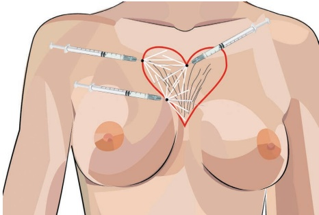
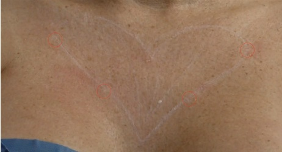
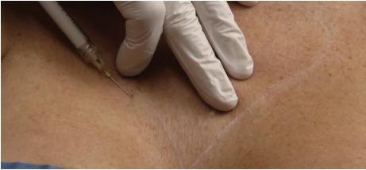
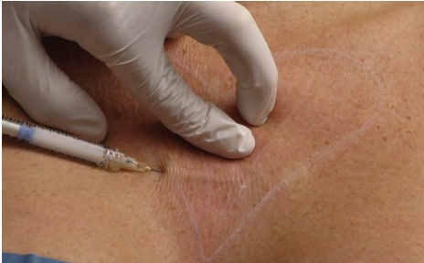
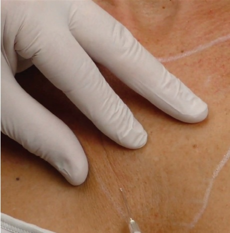
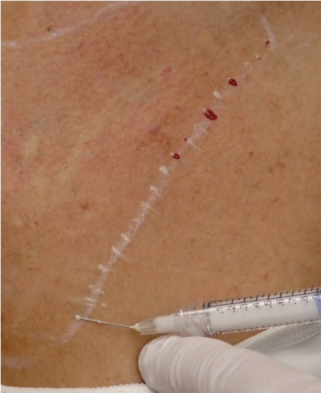

29 颈部、胸部和腹部：胸前区皮肤再年轻化
颈部、胸部和腹部皮肤重塑：乳沟区域
PIETER SIEBENGA AND JANI VAN LOGHEM
29.1 引言
乳沟是身体一个特别容易受到太阳损伤的部位。与面部或手臂相比，乳沟周围的皮肤由于皮层更薄、脂肪组织减少和皮脂腺较少，因此更容易受到紫外线B（UVB）照射而老化 [1]。除了色素沉着斑点或毛细血管扩张外，受损的胶原纤维会导致皱纹加重。特别是对于胸部相对较大的女性或植入了乳房假体的女性，皱纹可能会从胸骨间延伸至锁骨，呈散开状，这也被称为“恶魔之泉”。羟基磷灰石钙（CaHA）可用于收紧乳沟区域的皮肤。改善胶原结构、皮肤厚度和弹性可以带来更美观的外观。与其他稀释适应症一样，每处理约 100 cm² 的表面积应使用一支 1.5 mL 的注射器进行操作。稀释比例应为 1:1 至 1:3，具体取决于松弛的严重程度（皮肤越薄，稀释倍数越高）。
29.2 解剖学危险点
注射应尽可能接近真皮层，在真皮-真皮下交界处进行。使用仔细的技术时，治疗是安全的，因为真正的危险区域位于肋骨腔内。损伤乳腺组织的风险也微乎其微，因为乳腺组织位于乳房的浅筋膜下方，该部位超出了钝性套管针或锐针的触及范围。
29.3 乳沟钝性套管针技术
注射定位参见图 29.1。
29.3.1 分步技术
-
对胸部进行消毒。
-
标记需要治疗的区域。通常是一个心形区域，但具体形状可能根据皮肤松弛和乳沟皱纹的程度而改变（图 29.2）。
-
应避免在心底正中线处预先打孔，因为乳房会干扰注射时自由操作注射器。
-
根据皮肤厚度，使用高倍稀释的 CaHA（1:1 至 1:3）和 22G、70 mm 的钝性套管针或 25G、50 mm 的钝性套管针。


-
从下方的进针点开始。可以考虑弯曲钝性套管针以方便操作注射器。
-
将皮肤拉伸至注射方向，以控制钝性套管针的正确深度。确保钝性套管针位于真皮-真皮下交界处（图 29.3）。
-
以扇形模式，缓慢进行约 0.05–0.1 mL 的逆行注射。
-
用钝性套管针横跨正中线，以确保在皱纹最严重的内侧部分实现双侧交叉填充（图 29.4）。


29.4 乳沟注射技术（DÉCOLLETAGE NEEDLE TECHNIQUE）
-
对胸部进行消毒。
-
评估胸部的皱纹情况。通常，这些皱纹呈V形分布于胸部。标记出需要治疗的区域。
-
检查皮肤厚度。皮肤较厚或弹性较低的皮肤可使用 1:1 高倍稀释的 CaHA 进行注射。皮肤较薄或弹性较高（松弛）的皮肤则需要更高的高倍稀释度，以避免可见沉积物的风险。
-
将 27G 针轻微弯曲（15–20°），并使锥形面朝上。
-
在皱纹处注射逆行线性线条，用量约为 0.05 mL。捏起皮肤以更好地观察皱纹（图 29.5）。
-
正确的解剖层次是皮下层，位于真皮层下方。
-
完成所有线条填充后，进行交叉打法。注射逆行线性线条，每条线用量约为 0.025 mL，每条线间距小于 1 cm。始终垂直于皱纹（图 29.6）。
-
治疗后，检查是否有可触及的沉积物。如果存在，进行按摩排出。


29.5 术后护理（AFTERCARE）
可进行轻柔按摩以达到均匀分布，但如果采用低剂量逆行线性技术，则不需要。
高倍稀释的羟基磷灰石钙（CaHA）丝。建议患者避免日晒，因为使用锐针技术通常会出现瘀伤。
三到四个月后应评估效果。如有必要，届时可考虑进行追加治疗。
29.6 实现最佳效果的附加治疗
可考虑使用消退技术[2]将额外的真皮层粘连性透明质酸（HA）直接注射到皱纹中。减轻色素沉着斑点可显著改善胸部区域的美学状况。IPL或化学焕肤是该适应症的良好选择。稀释的CaHA可与医疗设备联用，例如带有可视化的微焦超声（Ultherapy），用于皮肤改善[3]。
参考文献
[1] J. Uitto, “The role of elastin and collagen in cutaneous aging: Intrinsic aging versus photoexposure,” J Drugs Dermatol, no. Suppl 2, pp. s12–s16, 2008.
[2] A. Alessandrini, K. Tretyakova, “The rejuvenating effect and tolerability of an auto-cross-linked hyaluronic acid on décolletage: A pilot prospective study,” Aesthetic Plast Surg, vol. 42, no. 2, pp. 520–529, 2018.
[3] G. Casabona, G. Pereira, “Microfocused ultrasound with visualization and calcium hydroxylapatite for improving skin laxity and cellulite appearance,” Plast Reconstr Surg Glob Open, vol. 5, no. 7, 2017.